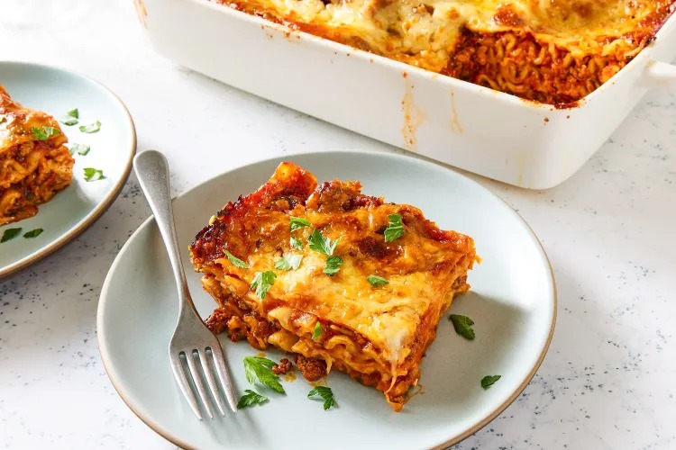

Lasagna

Description
Lasagna is a classic layered pasta dish baked with savory sauce, creamy cheese, and tender pasta sheets, bringing together rich, comforting flavors in every bite.
Ingredients
- Lasagna sheets
- Olive oil
- Onion (chopped)
- Garlic (minced)
- Tomato sauce or crushed tomatoes
- Ground meat (beef/chicken) or mixed vegetables
- Salt
- Black pepper
- Italian herbs (oregano, basil)
- White sauce / béchamel or ricotta cheese
- Mozzarella cheese
- Parmesan cheese
Steps
- Preheat the oven to 180°C (350°F).
- Cook lasagna sheets according to package instructions and set aside.
- Heat olive oil in a pan, sauté onion and garlic, then add ground meat or vegetables and cook well.
- Add tomato sauce, salt, pepper, and herbs; simmer for 10–15 minutes.
- Prepare the white sauce (béchamel) or keep ricotta ready.
- In a baking dish, spread a little sauce, add lasagna sheets, then layer with sauce and cheese.
- Repeat the layers until ingredients are used, finishing with cheese on top.
- Bake for 30–40 minutes until golden and bubbling.
- Rest for 10 minutes before slicing and serving.
Home